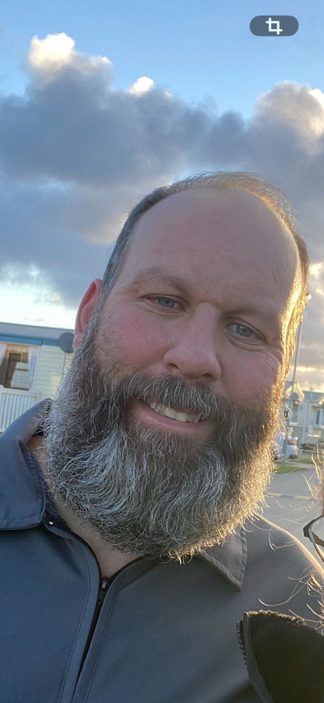
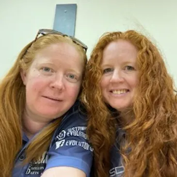
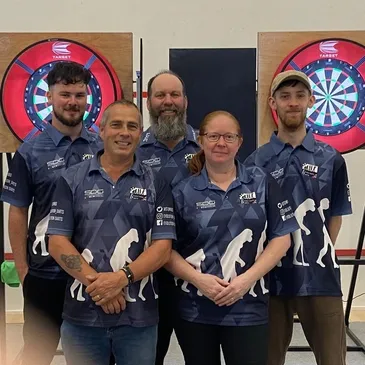
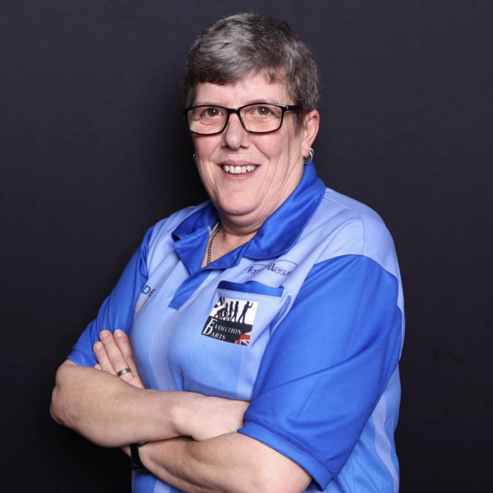
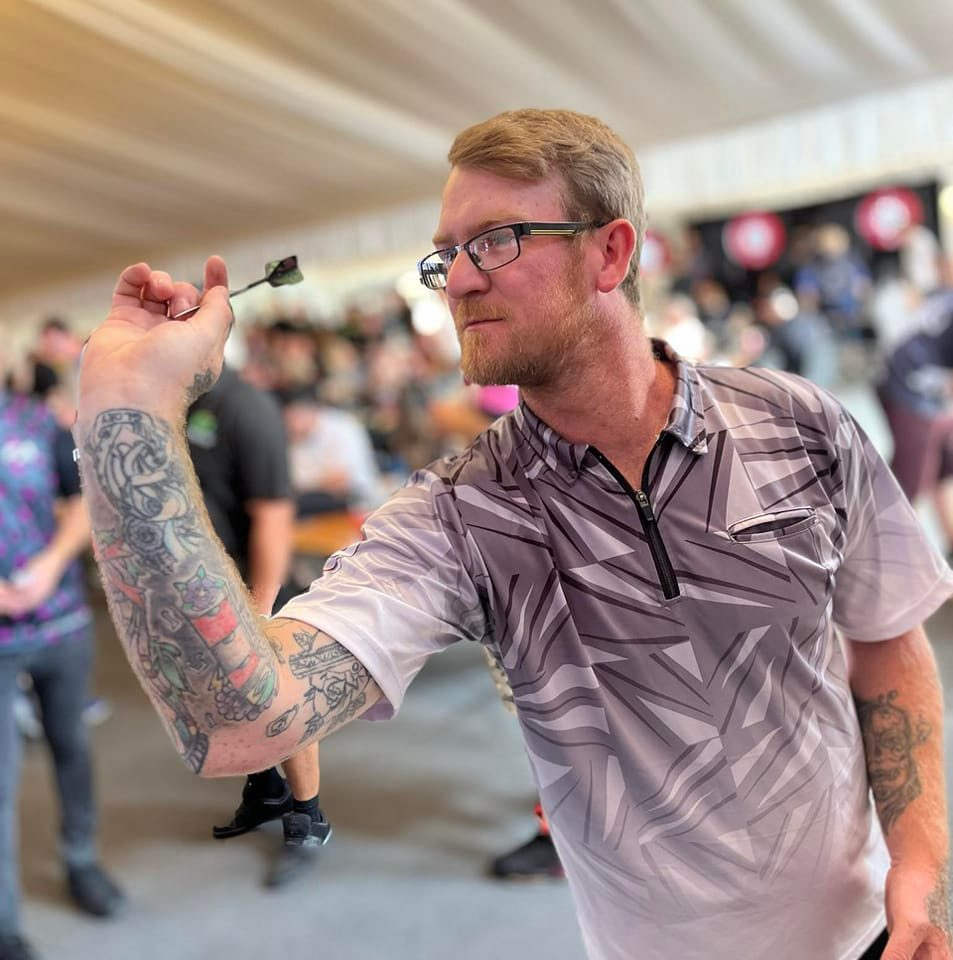
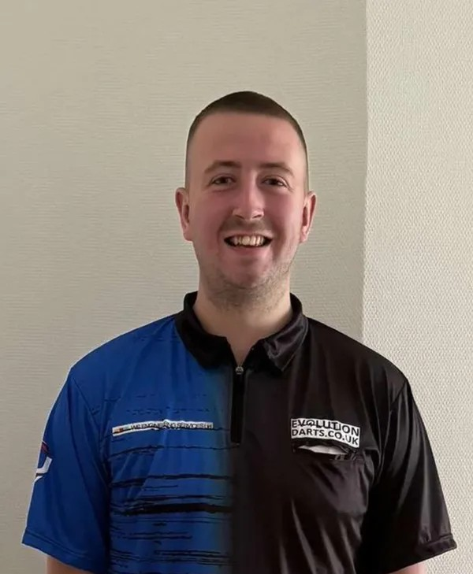

Evolution Darts is a premier darts organisation dedicated to promoting the sport and providing top-notch services to players of all levels. With a passion for darts and a commitment to excellence, we strive to create an inclusive and vibrant community for dart enthusiasts.

The guy who thinks hes the boss of this operation, comes up with the ideas, and can talk for hours about darts with anyone that's willing to listen (I'm the one with the beard)

The real brains of the operation, the girls run every comp from start to finish, every game every result, the real heart of the operation.

Every event takes preparation and we couldn't do it without the guys helping with the set up and take down at every venue.

Malta Ladies Open 2019 Champion and England international Jo Locke is the newest signing to the Evolution Darts team, an ever present for Suffolk County and a winner of numerous local and national ladies events we look forward to helping Jo reach her full potential on the BDO ladies tour

Will Stanmore is a dedicated player who has been instrumental in the success of Evolution Darts. His experience and skills make him a valuable asset to the team.

Still at the tender age of just 21 it seems like JJ has been on the darts scene forever, a regular member of the all conquering Suffolk Youth team and now a full Suffolk County Senior player JJ is also now making waves on the PDC Development TourOver the last few months JJ has made winning local comps a bit of a habit so fingers crossed he carries his great form into the Development Tour